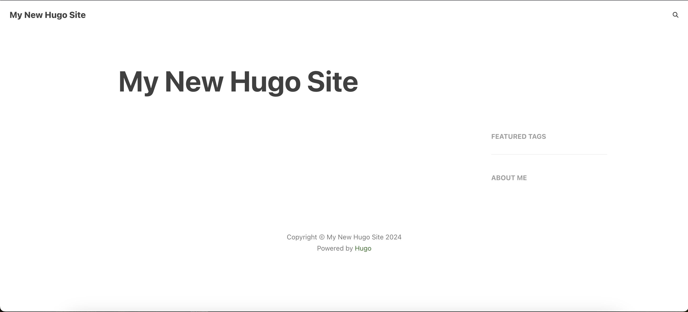

<!DOCTYPE html>
<html lang="zh" dir="ltr" class="scroll-smooth" data-default-appearance="light"
  data-auto-appearance="false"><head>
  <meta charset="utf-8" />
  
  <meta http-equiv="content-language" content="zh" />
  
  <meta name="viewport" content="width=device-width, initial-scale=1.0" />
  <meta http-equiv="X-UA-Compatible" content="ie=edge" />
  
  <title>折騰小記｜如果你也想建個靜態博客：（一）安裝hugo &middot; 東井</title>
  <meta name="title" content="折騰小記｜如果你也想建個靜態博客：（一）安裝hugo &middot; 東井" />
  
  <meta name="description" content="萬事開頭難...(" />
  <meta name="keywords" content="hugo, blog, " />
  
  
  <link rel="canonical" href="https://imasugu.cc/posts/build-a-blog/install-hugo/" />
  
  
  
  
  
  
  
  
  
  
  
  
  <link type="text/css" rel="stylesheet" href="/css/main.bundle.min.6e4ae876c10a92ccc0d85b6106b743188d216b7ca31d1b8c5d411779b63008f0b2e4d4b245820a5f0fb24b8633c72d2de6071ebbaf0623811ff67f4635e0d39a.css"
    integrity="sha512-bkrodsEKkszA2FthBrdDGI0ha3yjHRuMXUEXebYwCPCy5NSyRYIKXw&#43;yS4Yzxy0t5gceu68GI4Ef9n9GNeDTmg==" />
  
  
  <script type="text/javascript" src="/js/appearance.min.516a16745bea5a9bd011138d254cc0fd3973cd55ce6e15f3dec763e7c7c2c7448f8fe7b54cca811cb821b0c7e12cd161caace1dd794ac3d34d40937cbcc9ee12.js"
    integrity="sha512-UWoWdFvqWpvQERONJUzA/TlzzVXObhXz3sdj58fCx0SPj&#43;e1TMqBHLghsMfhLNFhyqzh3XlKw9NNQJN8vMnuEg=="></script>
  
  
  
  
  
  
  
  
  
  
  
  
  
  
  <script defer type="text/javascript" id="script-bundle" src="/js/main.bundle.min.3ad74b33440334ca29f8801ec6dac1f314951cf580e503d49631816b48d1f28d03543275f92b651565b48045b90731f47595b1396214b8b6aa11c6990f867f7e.js"
    integrity="sha512-OtdLM0QDNMop&#43;IAextrB8xSVHPWA5QPUljGBa0jR8o0DVDJ1&#43;StlFWW0gEW5BzH0dZWxOWIUuLaqEcaZD4Z/fg==" data-copy="" data-copied=""></script>
  
  
  
  <script src="/lib/zoom/zoom.min.f592a181a15d2a5b042daa7f746c3721acf9063f8b6acd175d989129865a37d400ae0e85b640f9ad42cd98d1f8ad30931718cf8811abdcc5fcb264400d1a2b0c.js" integrity="sha512-9ZKhgaFdKlsELap/dGw3Iaz5Bj&#43;Las0XXZiRKYZaN9QArg6FtkD5rULNmNH4rTCTFxjPiBGr3MX8smRADRorDA=="></script>
  
  
  
  <link rel="apple-touch-icon" sizes="180x180" href="/apple-touch-icon.png" />
  <link rel="icon" type="image/png" sizes="32x32" href="/favicon-32x32.png" />
  <link rel="icon" type="image/png" sizes="16x16" href="/favicon-16x16.png" />
  <link rel="manifest" href="/site.webmanifest" />
  
  
  
  
  
  
  
  
  <meta property="og:url" content="https://imasugu.cc/posts/build-a-blog/install-hugo/">
  <meta property="og:site_name" content="東井">
  <meta property="og:title" content="折騰小記｜如果你也想建個靜態博客：（一）安裝hugo">
  <meta property="og:description" content="萬事開頭難…(">
  <meta property="og:locale" content="zh">
  <meta property="og:type" content="article">
    <meta property="article:section" content="posts">
    <meta property="article:published_time" content="2024-06-13T00:00:00+08:00">
    <meta property="article:modified_time" content="2024-06-13T00:00:00+08:00">
    <meta property="article:tag" content="Hugo">
    <meta property="article:tag" content="Blog">

  
  <meta name="twitter:card" content="summary">
  <meta name="twitter:title" content="折騰小記｜如果你也想建個靜態博客：（一）安裝hugo">
  <meta name="twitter:description" content="萬事開頭難…(">

  
  <script type="application/ld+json">
  [{
    "@context": "https://schema.org",
    "@type": "Article",
    "articleSection": "文章列表📄",
    "name": "折騰小記｜如果你也想建個靜態博客：（一）安裝hugo",
    "headline": "折騰小記｜如果你也想建個靜態博客：（一）安裝hugo",
    
    "abstract": "萬事開頭難\u0026hellip;(",
    "inLanguage": "zh",
    "url" : "https:\/\/imasugu.cc\/posts\/build-a-blog\/install-hugo\/",
    "author" : {
      "@type": "Person",
      "name": ""
    },
    "copyrightYear": "2024",
    "dateCreated": "2024-06-13T00:00:00\u002b08:00",
    "datePublished": "2024-06-13T00:00:00\u002b08:00",
    
    "dateModified": "2024-06-13T00:00:00\u002b08:00",
    
    "keywords": ["hugo","blog"],
    
    "mainEntityOfPage": "true",
    "wordCount": "2436"
  }]
  </script>


  
  
  
  
  

<script src="/lib/jquery/jquery.slim.min.b0dca576e87d7eaa5850ae4e61759c065786cdb6489d68fcc82240539eebd5da522bdb4fda085ffd245808c8fe2acb2516408eb774ef26b5f6015fc6737c0ea8.js" integrity="sha512-sNylduh9fqpYUK5OYXWcBleGzbZInWj8yCJAU57r1dpSK9tP2ghf/SRYCMj&#43;KsslFkCOt3TvJrX2AV/Gc3wOqA=="></script>


  
  


  
  
  

<link rel="stylesheet" href="/css/syntax-light.css">
<link rel="stylesheet" href="/css/syntax-dark.css">
  
  <meta name="theme-color"/>
  
  
</head>
<body
  class="flex flex-col h-screen px-6 m-auto text-lg leading-7 max-w-7xl bg-neutral text-neutral-900 dark:bg-neutral-800 dark:text-neutral sm:px-14 md:px-24 lg:px-32 scrollbar-thin scrollbar-track-neutral-200 scrollbar-thumb-neutral-400 dark:scrollbar-track-neutral-800 dark:scrollbar-thumb-neutral-600">
  <div id="the-top" class="absolute flex self-center">
    <a class="px-3 py-1 text-sm -translate-y-8 rounded-b-lg bg-primary-200 focus:translate-y-0 dark:bg-neutral-600"
      href="#main-content"><span
        class="font-bold text-primary-600 ltr:pr-2 rtl:pl-2 dark:text-primary-400">&darr;</span>快轉到主要內容</a>
  </div>
  
  
  <div class="min-h-[148px]"></div>
<div class="fixed inset-x-0 pl-[24px] pr-[24px]" style="z-index:100">
  <div id="menu-blur" class="absolute opacity-0 inset-x-0 top-0 h-full single_hero_background nozoom backdrop-blur-2xl shadow-2xl"></div>
  <div class="relative max-w-[64rem] ml-auto mr-auto">
    <div style="padding-left:0;padding-right:0;padding-top:2px;padding-bottom:3px"
    class="main-menu flex items-center justify-between px-4 py-6 sm:px-6 md:justify-start gap-x-3">
    
    
    
    <div>
        <a href="/" class="flex">
            <span class="sr-only">東井</span>

            
            
            

        </a>
    </div>
    
    <div class="flex flex-1 items-center justify-between">
        <nav class="flex space-x-3">

            
            <a href="/" class="text-base font-medium text-gray-500 hover:text-gray-900">東井</a>
            

        </nav>
        <nav class="hidden md:flex items-center gap-x-5 md:ml-12 h-12">

            
            
            
  <a href="/"  class="flex items-center text-gray-500 hover:text-primary-600 dark:hover:text-primary-400">
    
    <p class="text-base font-medium" title="">
        首頁
    </p>
</a>


            
            
  <a href="/posts/"  class="flex items-center text-gray-500 hover:text-primary-600 dark:hover:text-primary-400">
    
    <p class="text-base font-medium" title="文章列表📄">
        文章
    </p>
</a>


            
            
  <a href="/categories/"  class="flex items-center text-gray-500 hover:text-primary-600 dark:hover:text-primary-400">
    
    <p class="text-base font-medium" title="文章分類📁">
        分類
    </p>
</a>


            
            
  <a href="/tags/"  class="flex items-center text-gray-500 hover:text-primary-600 dark:hover:text-primary-400">
    
    <p class="text-base font-medium" title="文章標籤🏷️">
        標籤
    </p>
</a>


            
            
  <a href="/friends/"  class="flex items-center text-gray-500 hover:text-primary-600 dark:hover:text-primary-400">
    
    <p class="text-base font-medium" title="有趣的人們✨">
        友情鏈接
    </p>
</a>


            
            
  <a href="/about/"  class="flex items-center text-gray-500 hover:text-primary-600 dark:hover:text-primary-400">
    
    <p class="text-base font-medium" title="關於這裡">
        關於
    </p>
</a>


            
            

            


            
            <button id="search-button" aria-label="Search" class="text-base hover:text-primary-600 dark:hover:text-primary-400"
                title="">
                

  <span class="relative block icon">
    <svg aria-hidden="true" focusable="false" data-prefix="fas" data-icon="search" class="svg-inline--fa fa-search fa-w-16" role="img" xmlns="http://www.w3.org/2000/svg" viewBox="0 0 512 512"><path fill="currentColor" d="M505 442.7L405.3 343c-4.5-4.5-10.6-7-17-7H372c27.6-35.3 44-79.7 44-128C416 93.1 322.9 0 208 0S0 93.1 0 208s93.1 208 208 208c48.3 0 92.7-16.4 128-44v16.3c0 6.4 2.5 12.5 7 17l99.7 99.7c9.4 9.4 24.6 9.4 33.9 0l28.3-28.3c9.4-9.4 9.4-24.6.1-34zM208 336c-70.7 0-128-57.2-128-128 0-70.7 57.2-128 128-128 70.7 0 128 57.2 128 128 0 70.7-57.2 128-128 128z"/></svg>

  </span>


            </button>
            


            
            
            <div
                class=" flex items-center">
                <button id="appearance-switcher" aria-label="Dark mode switcher" type="button" class="text-base hover:text-primary-600 dark:hover:text-primary-400">
                    <div class="flex items-center justify-center dark:hidden">
                        

  <span class="relative block icon">
    <svg xmlns="http://www.w3.org/2000/svg" viewBox="0 0 512 512"><path fill="currentColor" d="M32 256c0-123.8 100.3-224 223.8-224c11.36 0 29.7 1.668 40.9 3.746c9.616 1.777 11.75 14.63 3.279 19.44C245 86.5 211.2 144.6 211.2 207.8c0 109.7 99.71 193 208.3 172.3c9.561-1.805 16.28 9.324 10.11 16.95C387.9 448.6 324.8 480 255.8 480C132.1 480 32 379.6 32 256z"/></svg>

  </span>


                    </div>
                    <div class="items-center justify-center hidden dark:flex">
                        

  <span class="relative block icon">
    <svg xmlns="http://www.w3.org/2000/svg" viewBox="0 0 512 512"><path fill="currentColor" d="M256 159.1c-53.02 0-95.1 42.98-95.1 95.1S202.1 351.1 256 351.1s95.1-42.98 95.1-95.1S309 159.1 256 159.1zM509.3 347L446.1 255.1l63.15-91.01c6.332-9.125 1.104-21.74-9.826-23.72l-109-19.7l-19.7-109c-1.975-10.93-14.59-16.16-23.72-9.824L256 65.89L164.1 2.736c-9.125-6.332-21.74-1.107-23.72 9.824L121.6 121.6L12.56 141.3C1.633 143.2-3.596 155.9 2.736 164.1L65.89 256l-63.15 91.01c-6.332 9.125-1.105 21.74 9.824 23.72l109 19.7l19.7 109c1.975 10.93 14.59 16.16 23.72 9.824L256 446.1l91.01 63.15c9.127 6.334 21.75 1.107 23.72-9.822l19.7-109l109-19.7C510.4 368.8 515.6 356.1 509.3 347zM256 383.1c-70.69 0-127.1-57.31-127.1-127.1c0-70.69 57.31-127.1 127.1-127.1s127.1 57.3 127.1 127.1C383.1 326.7 326.7 383.1 256 383.1z"/></svg>

  </span>


                    </div>
                </button>
            </div>
            

        </nav>
        <div class="flex md:hidden items-center gap-x-5 md:ml-12 h-12">

            <span></span>

            


            
            <button id="search-button-mobile" aria-label="Search" class="text-base hover:text-primary-600 dark:hover:text-primary-400"
                title="">
                

  <span class="relative block icon">
    <svg aria-hidden="true" focusable="false" data-prefix="fas" data-icon="search" class="svg-inline--fa fa-search fa-w-16" role="img" xmlns="http://www.w3.org/2000/svg" viewBox="0 0 512 512"><path fill="currentColor" d="M505 442.7L405.3 343c-4.5-4.5-10.6-7-17-7H372c27.6-35.3 44-79.7 44-128C416 93.1 322.9 0 208 0S0 93.1 0 208s93.1 208 208 208c48.3 0 92.7-16.4 128-44v16.3c0 6.4 2.5 12.5 7 17l99.7 99.7c9.4 9.4 24.6 9.4 33.9 0l28.3-28.3c9.4-9.4 9.4-24.6.1-34zM208 336c-70.7 0-128-57.2-128-128 0-70.7 57.2-128 128-128 70.7 0 128 57.2 128 128 0 70.7-57.2 128-128 128z"/></svg>

  </span>


            </button>
            

            
            
            <button id="appearance-switcher-mobile" aria-label="Dark mode switcher" type="button" class="text-base hover:text-primary-600 dark:hover:text-primary-400 ltr:mr-1 rtl:ml-1">
                <div class="flex items-center justify-center dark:hidden">
                    

  <span class="relative block icon">
    <svg xmlns="http://www.w3.org/2000/svg" viewBox="0 0 512 512"><path fill="currentColor" d="M32 256c0-123.8 100.3-224 223.8-224c11.36 0 29.7 1.668 40.9 3.746c9.616 1.777 11.75 14.63 3.279 19.44C245 86.5 211.2 144.6 211.2 207.8c0 109.7 99.71 193 208.3 172.3c9.561-1.805 16.28 9.324 10.11 16.95C387.9 448.6 324.8 480 255.8 480C132.1 480 32 379.6 32 256z"/></svg>

  </span>


                </div>
                <div class="items-center justify-center hidden dark:flex">
                    

  <span class="relative block icon">
    <svg xmlns="http://www.w3.org/2000/svg" viewBox="0 0 512 512"><path fill="currentColor" d="M256 159.1c-53.02 0-95.1 42.98-95.1 95.1S202.1 351.1 256 351.1s95.1-42.98 95.1-95.1S309 159.1 256 159.1zM509.3 347L446.1 255.1l63.15-91.01c6.332-9.125 1.104-21.74-9.826-23.72l-109-19.7l-19.7-109c-1.975-10.93-14.59-16.16-23.72-9.824L256 65.89L164.1 2.736c-9.125-6.332-21.74-1.107-23.72 9.824L121.6 121.6L12.56 141.3C1.633 143.2-3.596 155.9 2.736 164.1L65.89 256l-63.15 91.01c-6.332 9.125-1.105 21.74 9.824 23.72l109 19.7l19.7 109c1.975 10.93 14.59 16.16 23.72 9.824L256 446.1l91.01 63.15c9.127 6.334 21.75 1.107 23.72-9.822l19.7-109l109-19.7C510.4 368.8 515.6 356.1 509.3 347zM256 383.1c-70.69 0-127.1-57.31-127.1-127.1c0-70.69 57.31-127.1 127.1-127.1s127.1 57.3 127.1 127.1C383.1 326.7 326.7 383.1 256 383.1z"/></svg>

  </span>


                </div>
            </button>
            

        </div>
    </div>
    <div class="-my-2 md:hidden">

        <label id="menu-button" class="block">
            
            <div class="cursor-pointer hover:text-primary-600 dark:hover:text-primary-400">
                

  <span class="relative block icon">
    <svg xmlns="http://www.w3.org/2000/svg" viewBox="0 0 448 512"><path fill="currentColor" d="M0 96C0 78.33 14.33 64 32 64H416C433.7 64 448 78.33 448 96C448 113.7 433.7 128 416 128H32C14.33 128 0 113.7 0 96zM0 256C0 238.3 14.33 224 32 224H416C433.7 224 448 238.3 448 256C448 273.7 433.7 288 416 288H32C14.33 288 0 273.7 0 256zM416 448H32C14.33 448 0 433.7 0 416C0 398.3 14.33 384 32 384H416C433.7 384 448 398.3 448 416C448 433.7 433.7 448 416 448z"/></svg>

  </span>


            </div>
            <div id="menu-wrapper" style="padding-top:5px;"
                class="fixed inset-0 z-30 invisible w-screen h-screen m-0 overflow-auto transition-opacity opacity-0 cursor-default bg-neutral-100/50 backdrop-blur-sm dark:bg-neutral-900/50">
                <ul
                    class="flex space-y-2 mt-3 flex-col items-end w-full px-6 py-6 mx-auto overflow-visible list-none ltr:text-right rtl:text-left max-w-7xl">

                    <li id="menu-close-button">
                        <span
                            class="cursor-pointer inline-block align-text-bottom hover:text-primary-600 dark:hover:text-primary-400">

  <span class="relative block icon">
    <svg xmlns="http://www.w3.org/2000/svg" viewBox="0 0 320 512"><path fill="currentColor" d="M310.6 361.4c12.5 12.5 12.5 32.75 0 45.25C304.4 412.9 296.2 416 288 416s-16.38-3.125-22.62-9.375L160 301.3L54.63 406.6C48.38 412.9 40.19 416 32 416S15.63 412.9 9.375 406.6c-12.5-12.5-12.5-32.75 0-45.25l105.4-105.4L9.375 150.6c-12.5-12.5-12.5-32.75 0-45.25s32.75-12.5 45.25 0L160 210.8l105.4-105.4c12.5-12.5 32.75-12.5 45.25 0s12.5 32.75 0 45.25l-105.4 105.4L310.6 361.4z"/></svg>

  </span>

</span>
                    </li>

                    

                    
  <li class="mt-1">
    <a href="/"  class="flex items-center text-gray-500 hover:text-primary-600 dark:hover:text-primary-400">
        
        <p class="text-bg font-bg" title="">
            首頁
        </p>
    </a>
</li>


                    

                    
  <li class="mt-1">
    <a href="/posts/"  class="flex items-center text-gray-500 hover:text-primary-600 dark:hover:text-primary-400">
        
        <p class="text-bg font-bg" title="文章列表📄">
            文章
        </p>
    </a>
</li>


                    

                    
  <li class="mt-1">
    <a href="/categories/"  class="flex items-center text-gray-500 hover:text-primary-600 dark:hover:text-primary-400">
        
        <p class="text-bg font-bg" title="文章分類📁">
            分類
        </p>
    </a>
</li>


                    

                    
  <li class="mt-1">
    <a href="/tags/"  class="flex items-center text-gray-500 hover:text-primary-600 dark:hover:text-primary-400">
        
        <p class="text-bg font-bg" title="文章標籤🏷️">
            標籤
        </p>
    </a>
</li>


                    

                    
  <li class="mt-1">
    <a href="/friends/"  class="flex items-center text-gray-500 hover:text-primary-600 dark:hover:text-primary-400">
        
        <p class="text-bg font-bg" title="有趣的人們✨">
            友情鏈接
        </p>
    </a>
</li>


                    

                    
  <li class="mt-1">
    <a href="/about/"  class="flex items-center text-gray-500 hover:text-primary-600 dark:hover:text-primary-400">
        
        <p class="text-bg font-bg" title="關於這裡">
            關於
        </p>
    </a>
</li>


                    

                </ul>
                
                

            </div>
        </label>
    </div>
</div>


<script>
    (function () {
        var $mainmenu = $('.main-menu');
        var path = window.location.pathname;
        $mainmenu.find('a[href="' + path + '"]').each(function (i, e) {
            $(e).children('p').addClass('active');
        });
    })();
</script>


  </div>
</div>
<script>
  window.addEventListener('scroll', function (e) {
    var scroll = window.pageYOffset || document.documentElement.scrollTop || document.body.scrollTop || 0;
    var background_blur = document.getElementById('menu-blur');
    background_blur.style.opacity = (scroll / 300);
  });
</script>

  
  <div class="relative flex flex-col grow">
    <main id="main-content" class="grow">
      


<article>
  

  <header id="single_header" class="mt-5 max-w-prose">
    
    <h1 class="mt-0 text-4xl font-extrabold text-neutral-900 dark:text-neutral">
      折騰小記｜如果你也想建個靜態博客：（一）安裝hugo
    </h1>
    <div class="mt-1 mb-6 text-base text-neutral-500 dark:text-neutral-400 print:hidden">
      


  
  


  


  


  


<div class="flex flex-row flex-wrap items-center">
  
  
  <time datetime="2024-06-13T00:00:00&#43;08:00">2024-06-13</time><span class="px-2 text-primary-500">&middot;</span><span>2436 字</span><span class="px-2 text-primary-500">&middot;</span><span title="預計閱讀時間">5 分鐘</span>
  

  
  
</div>


<div class="flex flex-row flex-wrap items-center">
  
  
  
  
  
  
  <span style="margin-top:0.5rem" class="mr-2" onclick="window.open(&#34;/categories/%E6%8A%98%E9%A8%B0%E5%B0%8F%E8%A8%98/&#34;,'_self');return false;">
    <span class="flex" style="cursor: pointer;">
  <span class="rounded-md border border-primary-400 px-1 py-[1px] text-xs font-normal text-primary-700 dark:border-primary-600 dark:text-primary-400">
    折騰小記
  </span>
</span>
  </span>
  
  
  
  
  
  
  
  
  
  <span style="margin-top:0.5rem" class="mr-2" onclick="window.open(&#34;/tags/hugo/&#34;,'_self');return false;">
    <span class="flex" style="cursor: pointer;">
  <span class="rounded-md border border-primary-400 px-1 py-[1px] text-xs font-normal text-primary-700 dark:border-primary-600 dark:text-primary-400">
    Hugo
  </span>
</span>
  </span>
  
  <span style="margin-top:0.5rem" class="mr-2" onclick="window.open(&#34;/tags/blog/&#34;,'_self');return false;">
    <span class="flex" style="cursor: pointer;">
  <span class="rounded-md border border-primary-400 px-1 py-[1px] text-xs font-normal text-primary-700 dark:border-primary-600 dark:text-primary-400">
    Blog
  </span>
</span>
  </span>
  
  
  
  
</div>


    </div>

    
    
    
    
    

    

    
      
      

      

      

    

  </header>
  
  <section class="flex flex-col max-w-full mt-0 prose dark:prose-invert lg:flex-row">
    
     <div
      class="order-first lg:ml-auto px-0 lg:order-last ltr:lg:pl-8 rtl:lg:pr-8">
      <div class="toc ltr:pl-5 rtl:pr-5 print:hidden lg:sticky lg:top-[140px]">

         <details open id="TOCView"
  class="toc-right mt-0 overflow-y-scroll overscroll-contain scrollbar-thin scrollbar-track-neutral-200 scrollbar-thumb-neutral-400 dark:scrollbar-track-neutral-800 dark:scrollbar-thumb-neutral-600 rounded-lg ltr:-ml-5 ltr:pl-5 rtl:-mr-5 rtl:pr-5 hidden lg:block">
  <summary
    class="block py-1 text-lg font-semibold cursor-pointer bg-neutral-100 text-neutral-800 ltr:-ml-5 ltr:pl-5 rtl:-mr-5 rtl:pr-5 dark:bg-neutral-700 dark:text-neutral-100 lg:hidden">
    目錄
  </summary>
  <div
    class="min-w-[220px] py-2 border-dotted ltr:-ml-5 ltr:border-l ltr:pl-5 rtl:-mr-5 rtl:border-r rtl:pr-5 dark:border-neutral-600">
    <nav id="TableOfContents">
  <ul>
    <li><a href="#何爲-hugo">&hellip;何爲 hugo</a></li>
    <li><a href="#安裝-hugo">安裝 hugo</a>
      <ul>
        <li><a href="#windows-系統下安裝">Windows 系統下安裝</a></li>
        <li><a href="#macos-系統下安裝">MacOS 系統下安裝</a>
          <ul>
            <li><a href="#或許你需要先安裝-homebrew">或許你需要先安裝 Homebrew</a></li>
            <li><a href="#安裝-hugo-1">安裝 Hugo</a></li>
          </ul>
        </li>
      </ul>
    </li>
    <li><a href="#建個博客主題是必須的嗎">建個博客&hellip;主題是必須的嗎？</a></li>
    <li><a href="#肆意書寫本不需要太多鋪墊">肆意書寫本不需要太多鋪墊</a></li>
    <li><a href="#主題推薦和一些廢話">主題推薦？和一些廢話</a></li>
  </ul>
</nav>
  </div>
</details>
<details class="toc-inside mt-0 overflow-hidden rounded-lg ltr:-ml-5 ltr:pl-5 rtl:-mr-5 rtl:pr-5 lg:hidden">
  <summary
    class="py-1 text-lg font-semibold cursor-pointer bg-neutral-100 text-neutral-800 ltr:-ml-5 ltr:pl-5 rtl:-mr-5 rtl:pr-5 dark:bg-neutral-700 dark:text-neutral-100 lg:hidden">
    目錄
  </summary>
  <div
    class="py-2 border-dotted border-neutral-300 ltr:-ml-5 ltr:border-l ltr:pl-5 rtl:-mr-5 rtl:border-r rtl:pr-5 dark:border-neutral-600">
    <nav id="TableOfContents">
  <ul>
    <li><a href="#何爲-hugo">&hellip;何爲 hugo</a></li>
    <li><a href="#安裝-hugo">安裝 hugo</a>
      <ul>
        <li><a href="#windows-系統下安裝">Windows 系統下安裝</a></li>
        <li><a href="#macos-系統下安裝">MacOS 系統下安裝</a>
          <ul>
            <li><a href="#或許你需要先安裝-homebrew">或許你需要先安裝 Homebrew</a></li>
            <li><a href="#安裝-hugo-1">安裝 Hugo</a></li>
          </ul>
        </li>
      </ul>
    </li>
    <li><a href="#建個博客主題是必須的嗎">建個博客&hellip;主題是必須的嗎？</a></li>
    <li><a href="#肆意書寫本不需要太多鋪墊">肆意書寫本不需要太多鋪墊</a></li>
    <li><a href="#主題推薦和一些廢話">主題推薦？和一些廢話</a></li>
  </ul>
</nav>
  </div>
</details>

<script>

  var margin = 200;
  var marginError = 50;

  (function () {
    var $window = $(window);
    var $toc = $('#TOCView');
    var tocHeight = $toc.height();

    function onResize() {
      var windowAndMarginHeight = $window.height() - margin;
      if(tocHeight >= windowAndMarginHeight) {
        $toc.css("overflow-y", "scroll")
        $toc.css("max-height", (windowAndMarginHeight + marginError) + "px")
      } else {
        $toc.css("overflow-y", "hidden")
        $toc.css("max-height", "9999999px")
      }
    }

    $window.on('resize', onResize);
    $(document).ready(onResize);
  })();


  (function () {
    var $toc = $('#TableOfContents');
    if ($toc.length > 0) {
      var $window = $(window);

      function onScroll() {
        var currentScroll = $window.scrollTop();
        var h = $('.anchor');
        var id = "";
        h.each(function (i, e) {
          e = $(e);
          if (e.offset().top - $(window).height()/3 <= currentScroll) {
            id = decodeURIComponent(e.attr('id'));
          }
        });
        var active = $toc.find('a.active');      
        if (active.length == 1 && active.eq(0).attr('href') == '#' + id) return true;

        active.each(function (i, e) {
           
            $(e).removeClass('active').siblings('ul').hide();
          
        });
        $toc.find('a[href="#' + id + '"]').addClass('active')
        $toc.find('a[href="#' + id + '"]').parentsUntil('#TableOfContents').each(function (i, e) {
          $(e).children('a').parents('ul').show();          
        });
      }

      $window.on('scroll', onScroll);
      $(document).ready(function () {
         
          $toc.find('a').parent('li').find('ul').hide();
        
        onScroll();
      });
    }
  })();


</script>
   </div>
      </div>
      

      <div class="min-w-0 min-h-0 max-w-fit">
        
        
<details style="margin-left:0px" class="mt-2 mb-5 overflow-hidden rounded-lg ltr:-ml-5 ltr:pl-5 rtl:-mr-5 rtl:pr-5" >
    
    <summary
        class="py-1 text-lg font-semibold cursor-pointer bg-primary-200 text-neutral-800 ltr:-ml-5 ltr:pl-5 rtl:-mr-5 rtl:pr-5 dark:bg-primary-800 dark:text-neutral-100">
        建個博客 - 本文屬於一個選集。
    </summary>
    
    
    
    <div
        class="py-1 border-dotted border-neutral-300 ltr:-ml-5 ltr:border-l ltr:pl-5 rtl:-mr-5 rtl:border-r rtl:pr-5 dark:border-neutral-600">
        § : 本文
    </div>
    
    


</details>


        <div class="article-content max-w-prose mb-20">
          <p>——是不是每一個博客主的第一篇博文都會和自己建立博客的心路歷程有關啊。</p>
<blockquote>
<p>說點廢話：</p>
<ul>
<li>本篇以及後續的小文均不能算是嚴肅教程，充其量算我的一些記錄，目的是幫助想要建立靜態博客但完全沒有代碼基礎的朋友（我也沒有）少踩一些坑。</li>
<li>我會盡力把自己記憶中建立博客的過程貼上來，但仍可能會出現錯漏和不夠詳細的地方，請閱讀本篇的朋友不吝指正。</li>
<li>本篇的用語爲：繁體中文。</li>
<li>本篇主要內容：安裝 Hugo，並且把你的博客文件夾建起來！</li>
</ul></blockquote>


<h1 class="relative group">&hellip;何爲 hugo 
    <div id="%E4%BD%95%E7%88%B2-hugo" class="anchor"></div>
    
    <span
        class="absolute top-0 w-6 transition-opacity opacity-0 ltr:-left-6 rtl:-right-6 not-prose group-hover:opacity-100">
        <a class="group-hover:text-primary-300 dark:group-hover:text-neutral-700"
            style="text-decoration-line: none !important;" href="#%E4%BD%95%E7%88%B2-hugo" aria-label="定位點">#</a>
    </span>        
    
</h1>
<p>請參看<a class="external-link" href="https://gohugo.io/" target="_blank" rel="noopener">HUGO 官方網站
    <span class="external-icon">
      <svg class="external-icon-svg" viewBox="0 0 21 21" xmlns="http://www.w3.org/2000/svg" aria-hidden="true">
        <path d="m13 3l3.293 3.293l-7 7l1.414 1.414l7-7L21 11V3z"/>
        <path d="M19 19H5V5h7l-2-2H5c-1.103 0-2 .897-2 2v14c0 1.103.897 2 2 2h14c1.103 0 2-.897 2-2v-5l-2-2v7z"/>
      </svg>
    </span>
</a>
以及<a class="external-link" href="https://www.gohugo.org/" target="_blank" rel="noopener">HUGO 中文文檔
    <span class="external-icon">
      <svg class="external-icon-svg" viewBox="0 0 21 21" xmlns="http://www.w3.org/2000/svg" aria-hidden="true">
        <path d="m13 3l3.293 3.293l-7 7l1.414 1.414l7-7L21 11V3z"/>
        <path d="M19 19H5V5h7l-2-2H5c-1.103 0-2 .897-2 2v14c0 1.103.897 2 2 2h14c1.103 0 2-.897 2-2v-5l-2-2v7z"/>
      </svg>
    </span>
</a>
。</p>


<h1 class="relative group">安裝 hugo 
    <div id="%E5%AE%89%E8%A3%9D-hugo" class="anchor"></div>
    
    <span
        class="absolute top-0 w-6 transition-opacity opacity-0 ltr:-left-6 rtl:-right-6 not-prose group-hover:opacity-100">
        <a class="group-hover:text-primary-300 dark:group-hover:text-neutral-700"
            style="text-decoration-line: none !important;" href="#%E5%AE%89%E8%A3%9D-hugo" aria-label="定位點">#</a>
    </span>        
    
</h1>
<p>兩個版本：standard（標準版）與 extended（延展版），推薦安裝 extended edition。</p>


<h2 class="relative group">Windows 系統下安裝 
    <div id="windows-%E7%B3%BB%E7%B5%B1%E4%B8%8B%E5%AE%89%E8%A3%9D" class="anchor"></div>
    
    <span
        class="absolute top-0 w-6 transition-opacity opacity-0 ltr:-left-6 rtl:-right-6 not-prose group-hover:opacity-100">
        <a class="group-hover:text-primary-300 dark:group-hover:text-neutral-700"
            style="text-decoration-line: none !important;" href="#windows-%E7%B3%BB%E7%B5%B1%E4%B8%8B%E5%AE%89%E8%A3%9D" aria-label="定位點">#</a>
    </span>        
    
</h2>
<p>目前個人使用 Mac 較多，只細說一下 MacOS 下的安裝方式。之後可能會再把 Win 系統筆電上的安裝截圖補全在這一部分，這會兒暫時不貼啦果咩。
官方安裝說明：<a class="external-link" href="https://gohugo.io/installation/windows/" target="_blank" rel="noopener">Windows 系統下安裝
    <span class="external-icon">
      <svg class="external-icon-svg" viewBox="0 0 21 21" xmlns="http://www.w3.org/2000/svg" aria-hidden="true">
        <path d="m13 3l3.293 3.293l-7 7l1.414 1.414l7-7L21 11V3z"/>
        <path d="M19 19H5V5h7l-2-2H5c-1.103 0-2 .897-2 2v14c0 1.103.897 2 2 2h14c1.103 0 2-.897 2-2v-5l-2-2v7z"/>
      </svg>
    </span>
</a>
</p>
<p>Windows 系統下需要注意兩點：</p>
<ol>
<li>選擇正確的軟件版本</li>
<li>注意添加環境變量</li>
</ol>


<h2 class="relative group">MacOS 系統下安裝 
    <div id="macos-%E7%B3%BB%E7%B5%B1%E4%B8%8B%E5%AE%89%E8%A3%9D" class="anchor"></div>
    
    <span
        class="absolute top-0 w-6 transition-opacity opacity-0 ltr:-left-6 rtl:-right-6 not-prose group-hover:opacity-100">
        <a class="group-hover:text-primary-300 dark:group-hover:text-neutral-700"
            style="text-decoration-line: none !important;" href="#macos-%E7%B3%BB%E7%B5%B1%E4%B8%8B%E5%AE%89%E8%A3%9D" aria-label="定位點">#</a>
    </span>        
    
</h2>
<p>官方安裝說明：<a class="external-link" href="https://gohugo.io/installation/macos/" target="_blank" rel="noopener">MacOS 系統下安裝
    <span class="external-icon">
      <svg class="external-icon-svg" viewBox="0 0 21 21" xmlns="http://www.w3.org/2000/svg" aria-hidden="true">
        <path d="m13 3l3.293 3.293l-7 7l1.414 1.414l7-7L21 11V3z"/>
        <path d="M19 19H5V5h7l-2-2H5c-1.103 0-2 .897-2 2v14c0 1.103.897 2 2 2h14c1.103 0 2-.897 2-2v-5l-2-2v7z"/>
      </svg>
    </span>
</a>
</p>


<h3 class="relative group">或許你需要先安裝 Homebrew 
    <div id="%E6%88%96%E8%A8%B1%E4%BD%A0%E9%9C%80%E8%A6%81%E5%85%88%E5%AE%89%E8%A3%9D-homebrew" class="anchor"></div>
    
    <span
        class="absolute top-0 w-6 transition-opacity opacity-0 ltr:-left-6 rtl:-right-6 not-prose group-hover:opacity-100">
        <a class="group-hover:text-primary-300 dark:group-hover:text-neutral-700"
            style="text-decoration-line: none !important;" href="#%E6%88%96%E8%A8%B1%E4%BD%A0%E9%9C%80%E8%A6%81%E5%85%88%E5%AE%89%E8%A3%9D-homebrew" aria-label="定位點">#</a>
    </span>        
    
</h3>
<p><strong><font size="4">方式 1: 通過終端機安裝</font></strong><br>
首先請安裝<a class="external-link" href="https://brew.sh/zh-tw/" target="_blank" rel="noopener">Homebrew
    <span class="external-icon">
      <svg class="external-icon-svg" viewBox="0 0 21 21" xmlns="http://www.w3.org/2000/svg" aria-hidden="true">
        <path d="m13 3l3.293 3.293l-7 7l1.414 1.414l7-7L21 11V3z"/>
        <path d="M19 19H5V5h7l-2-2H5c-1.103 0-2 .897-2 2v14c0 1.103.897 2 2 2h14c1.103 0 2-.897 2-2v-5l-2-2v7z"/>
      </svg>
    </span>
</a>
。<code>command + space</code>搜索“terminal”（終端機），按照官網說明將如下內容貼入終端機：</p>
<blockquote>
<p><code>/bin/bash -c &quot;$(curl -fsSL https://raw.githubusercontent.com/Homebrew/install/HEAD/install.sh)&quot;</code></p></blockquote>
<p>但，在沒有網絡條件的情況下可能會顯示“failed to connect &hellip;”之類的內容。此時可採用國內鏡像源下載安裝。<br>
將如下內容複製貼入終端機：</p>
<blockquote>
<p><code>/bin/zsh -c &quot;$(curl -fsSL https://gitee.com/cunkai/HomebrewCN/raw/master/Homebrew.sh)&quot;</code></p></blockquote>
<p>選擇下載源並輸入密碼安裝即可（我記得我選擇的是中科大的源）。後期替換源就請另外搜索解決辦法啦，這方面我也不是專家&gt;&lt;</p>
<p><strong><font size="4">方式 2: pkg 文件安裝</font></strong><br>
官網也說了最新版的 4.3.5 可以試試 pkg 文件安裝：<strong><a class="external-link" href="https://github.com/Homebrew/brew/releases/tag/4.3.5" target="_blank" rel="noopener">https://github.com/Homebrew/brew/releases/tag/4.3.5
    <span class="external-icon">
      <svg class="external-icon-svg" viewBox="0 0 21 21" xmlns="http://www.w3.org/2000/svg" aria-hidden="true">
        <path d="m13 3l3.293 3.293l-7 7l1.414 1.414l7-7L21 11V3z"/>
        <path d="M19 19H5V5h7l-2-2H5c-1.103 0-2 .897-2 2v14c0 1.103.897 2 2 2h14c1.103 0 2-.897 2-2v-5l-2-2v7z"/>
      </svg>
    </span>
</a>
</strong> 拖動安裝即可，簡單快捷！<br>
安裝完成之後用<code>brew update</code>命令檢查狀態，再試試<code>brew -v</code>查看當前版本，確認 Homebrew 安裝完成。</p>
<hr>


<h3 class="relative group">安裝 Hugo 
    <div id="%E5%AE%89%E8%A3%9D-hugo-1" class="anchor"></div>
    
    <span
        class="absolute top-0 w-6 transition-opacity opacity-0 ltr:-left-6 rtl:-right-6 not-prose group-hover:opacity-100">
        <a class="group-hover:text-primary-300 dark:group-hover:text-neutral-700"
            style="text-decoration-line: none !important;" href="#%E5%AE%89%E8%A3%9D-hugo-1" aria-label="定位點">#</a>
    </span>        
    
</h3>
<p>在終端機中輸入<code>brew install hugo</code>，完成後輸入<code>hugo version</code>，如果安裝成功會出現如下代碼：</p>
<pre><code>hugo v0.123.0-3c8a4713908e48e6523f058ca126710397aa4ed5+extended darwin/arm64 BuildDate=2024-02-19T16:32:38Z VendorInfo=brew&lt;/span&gt;
</code></pre>
<p>好了，hugo 安裝成功了，下一步：建立你的博客。</p>
<hr>


<h1 class="relative group">建個博客&hellip;主題是必須的嗎？ 
    <div id="%E5%BB%BA%E5%80%8B%E5%8D%9A%E5%AE%A2%E4%B8%BB%E9%A1%8C%E6%98%AF%E5%BF%85%E9%A0%88%E7%9A%84%E5%97%8E" class="anchor"></div>
    
    <span
        class="absolute top-0 w-6 transition-opacity opacity-0 ltr:-left-6 rtl:-right-6 not-prose group-hover:opacity-100">
        <a class="group-hover:text-primary-300 dark:group-hover:text-neutral-700"
            style="text-decoration-line: none !important;" href="#%E5%BB%BA%E5%80%8B%E5%8D%9A%E5%AE%A2%E4%B8%BB%E9%A1%8C%E6%98%AF%E5%BF%85%E9%A0%88%E7%9A%84%E5%97%8E" aria-label="定位點">#</a>
    </span>        
    
</h1>
<p>首先請確定要安装的文件夹。在終端機中輸入你想要保存博客文件夾的文件夾。比如，Documents（文件），此處示例我選擇存在 Documents 內的 personal 文件夾內。</p>
<div class="highlight"><pre tabindex="0" class="chroma"><code class="language-bash" data-lang="bash"><span class="line"><span class="cl"><span class="nb">cd</span> Documents/personal
</span></span></code></pre></div><p>輸入<code>hugo new site myblog</code>（“myblog”是你給你的博客文件夾起的名字，請自由地替換）即會出現以下內容：</p>
<div class="highlight"><pre tabindex="0" class="chroma"><code class="language-bash" data-lang="bash"><span class="line"><span class="cl">Congratulations! Your new Hugo site was created in /Users/Yourname/Documents/personal/myblog.
</span></span><span class="line"><span class="cl">
</span></span><span class="line"><span class="cl">Just a few more steps...
</span></span><span class="line"><span class="cl">
</span></span><span class="line"><span class="cl">1. Change the current directory to /Users/Yourname/Documents/personal/myblog.
</span></span><span class="line"><span class="cl">2. Create or install a theme:
</span></span><span class="line"><span class="cl">   - Create a new theme with the <span class="nb">command</span> <span class="s2">&#34;hugo new theme &lt;THEMENAME&gt;&#34;</span>
</span></span><span class="line"><span class="cl">   - Install a theme from https://themes.gohugo.io/
</span></span><span class="line"><span class="cl">3. Edit hugo.toml, setting the <span class="s2">&#34;theme&#34;</span> property to the theme name.
</span></span><span class="line"><span class="cl">4. Create new content with the <span class="nb">command</span> <span class="s2">&#34;hugo new content &lt;SECTIONNAME&gt;/&lt;FILENAME&gt;.&lt;FORMAT&gt;&#34;</span>.
</span></span><span class="line"><span class="cl">5. Start the embedded web server with the <span class="nb">command</span> <span class="s2">&#34;hugo server --buildDrafts&#34;</span>.
</span></span><span class="line"><span class="cl">
</span></span><span class="line"><span class="cl">See documentation at https://gohugo.io/.
</span></span><span class="line"><span class="cl">Yourname@YourMacBook personal %
</span></span></code></pre></div><p>點開 myblog 文件夾，可以發現整體架構大概是這樣的。</p>
<div class="highlight"><pre tabindex="0" class="chroma"><code class="language-bash" data-lang="bash"><span class="line"><span class="cl">myblog
</span></span><span class="line"><span class="cl">├── archetypes
</span></span><span class="line"><span class="cl">│   └── default.md
</span></span><span class="line"><span class="cl">├── assets
</span></span><span class="line"><span class="cl">├── content
</span></span><span class="line"><span class="cl">├── data
</span></span><span class="line"><span class="cl">├── hugo.html
</span></span><span class="line"><span class="cl">├── i18n
</span></span><span class="line"><span class="cl">├── layouts
</span></span><span class="line"><span class="cl">├── public
</span></span><span class="line"><span class="cl">│   ├── categories
</span></span><span class="line"><span class="cl">│   │   └── index.xml
</span></span><span class="line"><span class="cl">│   ├── index.xml
</span></span><span class="line"><span class="cl">│   ├── sitemap.xml
</span></span><span class="line"><span class="cl">│   └── tags
</span></span><span class="line"><span class="cl">│       └── index.xml
</span></span><span class="line"><span class="cl">├── static
</span></span><span class="line"><span class="cl">└── themes
</span></span></code></pre></div><p>博客文件夾分爲：<br>
archetypes（內容模版框架）<br>
assets（預設）<br>
content（博文）<br>
data（數據，但我不知道裝了什麼因爲我的文件夾目前是空的）<br>
i18n（多語言支持）<br>
layouts（全局樣式）<br>
public（保存的編譯完成的 html 文件，同時也是對外發佈的內容）<br>
static（靜態文件）<br>
themes（主題）</p>
<p>此時的博客文件夾光禿禿一片，要添加一個主題才能看到博客效果。你可以選擇前往官方站點<a class="external-link" href="https://themes.gohugo.io/" target="_blank" rel="noopener">Hugo themes
    <span class="external-icon">
      <svg class="external-icon-svg" viewBox="0 0 21 21" xmlns="http://www.w3.org/2000/svg" aria-hidden="true">
        <path d="m13 3l3.293 3.293l-7 7l1.414 1.414l7-7L21 11V3z"/>
        <path d="M19 19H5V5h7l-2-2H5c-1.103 0-2 .897-2 2v14c0 1.103.897 2 2 2h14c1.103 0 2-.897 2-2v-5l-2-2v7z"/>
      </svg>
    </span>
</a>
尋找一個你喜歡的主題，按照主題作者的說明來進行安裝使用。<br>
（本博選用了<a class="external-link" href="https://github.com/roninro/hugo-theme-puppet" target="_blank" rel="noopener">Puppet
    <span class="external-icon">
      <svg class="external-icon-svg" viewBox="0 0 21 21" xmlns="http://www.w3.org/2000/svg" aria-hidden="true">
        <path d="m13 3l3.293 3.293l-7 7l1.414 1.414l7-7L21 11V3z"/>
        <path d="M19 19H5V5h7l-2-2H5c-1.103 0-2 .897-2 2v14c0 1.103.897 2 2 2h14c1.103 0 2-.897 2-2v-5l-2-2v7z"/>
      </svg>
    </span>
</a>
作為母版來進行魔改，但該主題作者已經兩年沒有更新了，所以各位不一定要用這個主題嗷。）<br>
按照主題作者的說明，可以選擇在根目錄下<code>git init</code>後<code>git clone</code>的方式，也可以簡單粗暴地直接複製整個文件夾的內容到博客文件夾根目錄。<br>
複製完成後在根目錄中（<code>cd myblog</code>）輸入<code>hugo server</code>，hugo 就開始生成頁面了：</p>
<div class="highlight"><pre tabindex="0" class="chroma"><code class="language-bash" data-lang="bash"><span class="line"><span class="cl">umi@MyMacBook-Pro blog % hugo server
</span></span><span class="line"><span class="cl">Watching <span class="k">for</span> changes in /Users/yourname/Documents/personal/myblog/<span class="o">{</span>archetypes,assets,content,data,i18n,layouts,static<span class="o">}</span>
</span></span><span class="line"><span class="cl">Watching <span class="k">for</span> config changes in /Users/yourname/Documents/personal/blog/hugo.toml
</span></span><span class="line"><span class="cl">Start building sites …
</span></span><span class="line"><span class="cl">hugo v0.123.0-3c8a4713908e48e6523f058ca126710397aa4ed5+extended darwin/arm64 <span class="nv">BuildDate</span><span class="o">=</span>2024-02-19T16:32:38Z <span class="nv">VendorInfo</span><span class="o">=</span>brew
</span></span><span class="line"><span class="cl">
</span></span><span class="line"><span class="cl">                   <span class="p">|</span> EN
</span></span><span class="line"><span class="cl">-------------------+-----
</span></span><span class="line"><span class="cl">  Pages            <span class="p">|</span>  <span class="m">8</span>
</span></span><span class="line"><span class="cl">  Paginator pages  <span class="p">|</span>  <span class="m">0</span>
</span></span><span class="line"><span class="cl">  Non-page files   <span class="p">|</span>  <span class="m">0</span>
</span></span><span class="line"><span class="cl">  Static files     <span class="p">|</span> <span class="m">22</span>
</span></span><span class="line"><span class="cl">  Processed images <span class="p">|</span>  <span class="m">0</span>
</span></span><span class="line"><span class="cl">  Aliases          <span class="p">|</span>  <span class="m">1</span>
</span></span><span class="line"><span class="cl">  Cleaned          <span class="p">|</span>  <span class="m">0</span>
</span></span><span class="line"><span class="cl">
</span></span><span class="line"><span class="cl">Built in <span class="m">36</span> ms
</span></span><span class="line"><span class="cl">Environment: <span class="s2">&#34;development&#34;</span>
</span></span><span class="line"><span class="cl">Serving pages from disk
</span></span><span class="line"><span class="cl">Running in Fast Render Mode. For full rebuilds on change: hugo server --disableFastRender
</span></span><span class="line"><span class="cl">Web Server is available at http://localhost:1313/ <span class="o">(</span><span class="nb">bind</span> address 127.0.0.1<span class="o">)</span>
</span></span><span class="line"><span class="cl">Press Ctrl+C to stop
</span></span></code></pre></div><p>地址欄輸入上方這個地址：<code>http://localhost:1313/</code>，現在你應該就能看到個人網頁的雛形了：<br>

    <figure>
      
      
    </figure>
</p>


<h1 class="relative group">肆意書寫本不需要太多鋪墊 
    <div id="%E8%82%86%E6%84%8F%E6%9B%B8%E5%AF%AB%E6%9C%AC%E4%B8%8D%E9%9C%80%E8%A6%81%E5%A4%AA%E5%A4%9A%E9%8B%AA%E5%A2%8A" class="anchor"></div>
    
    <span
        class="absolute top-0 w-6 transition-opacity opacity-0 ltr:-left-6 rtl:-right-6 not-prose group-hover:opacity-100">
        <a class="group-hover:text-primary-300 dark:group-hover:text-neutral-700"
            style="text-decoration-line: none !important;" href="#%E8%82%86%E6%84%8F%E6%9B%B8%E5%AF%AB%E6%9C%AC%E4%B8%8D%E9%9C%80%E8%A6%81%E5%A4%AA%E5%A4%9A%E9%8B%AA%E5%A2%8A" aria-label="定位點">#</a>
    </span>        
    
</h1>
<p>如果對主題沒有什麼特殊要求只是想有個地方寫東西的話，這個時候把標題改改那麼你已經 ready to go 啦！打開根目錄下的 hugo.toml 文件，將標題中的 My New Hugo Site 改成自己喜歡的博客標題。</p>
<div class="highlight"><pre tabindex="0" class="chroma"><code class="language-bash" data-lang="bash"><span class="line"><span class="cl"><span class="nv">baseURL</span> <span class="o">=</span> <span class="s1">&#39;https://example.org/&#39;</span>
</span></span><span class="line"><span class="cl"><span class="nv">languageCode</span> <span class="o">=</span> <span class="s1">&#39;en-us&#39;</span>
</span></span><span class="line"><span class="cl"><span class="nv">title</span> <span class="o">=</span> <span class="s1">&#39;My New Hugo Site&#39;</span>
</span></span></code></pre></div><p>終端機中輸入 <code>cd myblog</code>回到根目錄，輸入<code>hugo new posts/my-first-post.md</code>：</p>
<div class="highlight"><pre tabindex="0" class="chroma"><code class="language-bash" data-lang="bash"><span class="line"><span class="cl">% hugo new posts/my-first-post.md
</span></span><span class="line"><span class="cl">Content <span class="s2">&#34;/Users/Yourname/Documents/personal/blog/content/posts/my-first-post.md&#34;</span> created
</span></span></code></pre></div><p>這篇名爲<code>my-first-post</code>的博文就已經創建成功了。
用編輯器打開這個 markdown 文檔後能看到模版是這樣的：</p>
<div class="highlight"><pre tabindex="0" class="chroma"><code class="language-bash" data-lang="bash"><span class="line"><span class="cl">+++
</span></span><span class="line"><span class="cl"><span class="nv">title</span> <span class="o">=</span> <span class="s2">&#34;My First Post&#34;</span>
</span></span><span class="line"><span class="cl"><span class="nv">date</span> <span class="o">=</span> 2024-06-12T23:32:24+08:00
</span></span><span class="line"><span class="cl"><span class="nv">draft</span> <span class="o">=</span> <span class="nb">true</span>
</span></span><span class="line"><span class="cl"><span class="nv">description</span> <span class="o">=</span> <span class="s2">&#34;&#34;</span>
</span></span><span class="line"><span class="cl"><span class="nv">subtitle</span> <span class="o">=</span> <span class="s2">&#34;&#34;</span>
</span></span><span class="line"><span class="cl"><span class="nv">header_img</span> <span class="o">=</span> <span class="s2">&#34;&#34;</span>
</span></span><span class="line"><span class="cl"><span class="nv">short</span> <span class="o">=</span> <span class="nb">false</span>
</span></span><span class="line"><span class="cl"><span class="nv">toc</span> <span class="o">=</span> <span class="nb">true</span>
</span></span><span class="line"><span class="cl"><span class="nv">tags</span> <span class="o">=</span> <span class="o">[]</span>
</span></span><span class="line"><span class="cl"><span class="nv">categories</span> <span class="o">=</span> <span class="o">[]</span>
</span></span><span class="line"><span class="cl"><span class="nv">series</span> <span class="o">=</span> <span class="o">[]</span>
</span></span><span class="line"><span class="cl"><span class="nv">comment</span> <span class="o">=</span> <span class="nb">true</span>
</span></span><span class="line"><span class="cl">+++
</span></span></code></pre></div><p>draft = true 就表示該博文現在是草稿狀態。在下面完成你的博文之後需要把它改成 false，才能成功發佈。</p>
<p>如果需要存檔頁面，按照主題作者的說明，在<code>content</code>文件夾下新建一個<code>archive</code>文件夾，文件夾中新建<code>index_.md</code>文檔即可顯示存檔頁面，這個頁面會出現在你的主頁，可以直接點擊進入。</p>
<div class="highlight"><pre tabindex="0" class="chroma"><code class="language-bash" data-lang="bash"><span class="line"><span class="cl">---
</span></span><span class="line"><span class="cl">title: Archive
</span></span><span class="line"><span class="cl">description:
</span></span><span class="line"><span class="cl">header_img: /img/archive-bg.jpg
</span></span><span class="line"><span class="cl">short: <span class="nb">true</span>
</span></span><span class="line"><span class="cl">---
</span></span></code></pre></div><p>寫好第一篇博文，一個最簡單的靜態博客就已算成功建立，至於日後賽博房間要如何裝修，刷什麼漆擺什麼物件，就全憑你自己的喜好來，裝修其實是個非常耗時耗精力（當然也非常有趣）的事情，並不一定要急於短時間內搞定。</p>


<h1 class="relative group">主題推薦？和一些廢話 
    <div id="%E4%B8%BB%E9%A1%8C%E6%8E%A8%E8%96%A6%E5%92%8C%E4%B8%80%E4%BA%9B%E5%BB%A2%E8%A9%B1" class="anchor"></div>
    
    <span
        class="absolute top-0 w-6 transition-opacity opacity-0 ltr:-left-6 rtl:-right-6 not-prose group-hover:opacity-100">
        <a class="group-hover:text-primary-300 dark:group-hover:text-neutral-700"
            style="text-decoration-line: none !important;" href="#%E4%B8%BB%E9%A1%8C%E6%8E%A8%E8%96%A6%E5%92%8C%E4%B8%80%E4%BA%9B%E5%BB%A2%E8%A9%B1" aria-label="定位點">#</a>
    </span>        
    
</h1>
<p>除了當前主題，其實個人最想用的是<a class="external-link" href="https://github.com/mrhelloboy/seven" target="_blank" rel="noopener">Seven
    <span class="external-icon">
      <svg class="external-icon-svg" viewBox="0 0 21 21" xmlns="http://www.w3.org/2000/svg" aria-hidden="true">
        <path d="m13 3l3.293 3.293l-7 7l1.414 1.414l7-7L21 11V3z"/>
        <path d="M19 19H5V5h7l-2-2H5c-1.103 0-2 .897-2 2v14c0 1.103.897 2 2 2h14c1.103 0 2-.897 2-2v-5l-2-2v7z"/>
      </svg>
    </span>
</a>
這個主題，簡潔、優雅又富有設計感，但我幾個月前每次嘗試安裝+魔改就反覆報錯，可能是因爲完全看不懂 tailwind 的緣故，不知道改到哪就開始報錯了&hellip;<br>
不過最近作者更新了主題，萬一我哪天又想起來折騰去魔改了呢&hellip;？（被拖走）</p>
<p>謝謝路過的讀者們耐心讀到這裏。下一篇更新會說一下本地博客託管到 github 怎麼操作以及我部署過程中踩的一些坑XD</p>

          
          
          
        </div>
        
        

        
<details style="margin-left:0px" class="mt-2 mb-5 overflow-hidden rounded-lg ltr:-ml-5 ltr:pl-5 rtl:-mr-5 rtl:pr-5">
    
    <summary
        class="py-1 text-lg font-semibold cursor-pointer bg-primary-200 text-neutral-800 ltr:-ml-5 ltr:pl-5 rtl:-mr-5 rtl:pr-5 dark:bg-primary-800 dark:text-neutral-100">
        建個博客 - 本文屬於一個選集。
    </summary>
    
    
    
    <div
        class="py-1 border-dotted border-neutral-300 ltr:-ml-5 ltr:border-l ltr:pl-5 rtl:-mr-5 rtl:border-r rtl:pr-5 dark:border-neutral-600">
        § : 本文
    </div>
    
    


</details>

        

          
      </div>
     
      
      
        
        
          
          
        
      <script>
        var oid = "views_posts\/build-a-blog\/install-hugo\/index.md"
        var oid_likes = "likes_posts\/build-a-blog\/install-hugo\/index.md"
      </script>
      
      
      <script type="text/javascript" src="/js/page.min.0860cf4e04fa2d72cc33ddba263083464d48f67de06114529043cb4623319efed4f484fd7f1730df5abea0e2da6f3538855634081d02f2d6e920b956f063e823.js" integrity="sha512-CGDPTgT6LXLMM926JjCDRk1I9n3gYRRSkEPLRiMxnv7U9IT9fxcw31q&#43;oOLabzU4hVY0CB0C8tbpILlW8GPoIw=="></script>
      
  
    </section>
  <footer class="pt-8 max-w-prose print:hidden">

    
  
    
    
    
    <div class="pt-8">
      <hr class="border-dotted border-neutral-300 dark:border-neutral-600" />
      <div class="flex justify-between pt-3">
        <span>
          
        </span>
        <span>
          
            <a class="flex text-right group ml-3" href="/posts/Ivana-live-2024/">
              <span class="flex flex-col">
                <span
                  class="mt-[0.1rem] leading-6 group-hover:underline group-hover:decoration-primary-500"
                  >聚光燈下｜趁歌舞昇平真高興 來留下記認</span
                >
                <span class="mt-[0.1rem] text-xs text-neutral-500 dark:text-neutral-400">
                  
                    <time datetime="2024-09-13T00:00:00&#43;08:00">2024-09-13</time>
                  
                </span>
              </span>
              <span
                class="ml-3 text-neutral-700 group-hover:text-primary-600 ltr:inline rtl:hidden dark:text-neutral dark:group-hover:text-primary-400"
                >&rarr;</span
              >
              <span
                class="mr-3 text-neutral-700 group-hover:text-primary-600 ltr:hidden rtl:inline dark:text-neutral dark:group-hover:text-primary-400"
                >&larr;</span
              >
            </a>
          
        </span>
      </div>
    </div>
  


    
    
    <div class="pt-3">
      <hr class="border-dotted border-neutral-300 dark:border-neutral-600" />
      <div class="pt-3">
        <div id="tcomment"></div>
<script src="https://cdn.jsdelivr.net/npm/twikoo@1.6.41/dist/twikoo.min.js"></script>
<script>
twikoo.init({
  envId: 'https://kai-hugo-comments.netlify.app/.netlify/functions/twikoo', 
  el: '#tcomment', 
  region: '', 
  
  lang: 'zh-hk', 
})
</script>
      </div>
    </div>
    
    
  </footer>
</article>

      <div id="top-scroller" class="pointer-events-none absolute top-[110vh] bottom-0 w-12 ltr:right-0 rtl:left-0">
  <a href="#the-top"
    class="pointer-events-auto sticky top-[calc(100vh-5.5rem)] flex h-12 w-12 mb-16 items-center justify-center rounded-full bg-neutral/50 text-xl text-neutral-700 hover:text-primary-600 dark:bg-neutral-800/50 dark:text-neutral dark:hover:text-primary-400"
    aria-label="捲動到頁頂" title="捲動到頁頂">
    &uarr;
  </a>
</div>
    </main><footer id="site-footer" class="py-10 print:hidden">
  
  
    
  
  <div class="flex items-center justify-between">

    
    
    <p class="text-sm text-neutral-500 dark:text-neutral-400">
      東井  &copy; 2025 · Please Don't Reblog or Repost Without Asking Permission  
    </p>
    

    
    

  </div>
  <script>
    
    mediumZoom(document.querySelectorAll("img:not(.nozoom)"), {
      margin: 24,
      background: 'rgba(0,0,0,0.5)',
      scrollOffset: 0,
    })
    
  </script>
  
  
  <script type="text/javascript" src="/js/process.min.ee03488f19c93c2efb199e2e3014ea5f3cb2ce7d45154adb3399a158cac27ca52831db249ede5bb602700ef87eb02434139de0858af1818ab0fb4182472204a4.js" integrity="sha512-7gNIjxnJPC77GZ4uMBTqXzyyzn1FFUrbM5mhWMrCfKUoMdsknt5btgJwDvh&#43;sCQ0E53ghYrxgYqw&#43;0GCRyIEpA=="></script>
  
  
</footer>
<div
  id="search-wrapper"
  class="invisible fixed inset-0 flex h-screen w-screen cursor-default flex-col bg-neutral-500/50 p-4 backdrop-blur-sm dark:bg-neutral-900/50 sm:p-6 md:p-[10vh] lg:p-[12vh]"
  data-url="https://imasugu.cc/"
  style="z-index:500"
>
  <div
    id="search-modal"
    class="flex flex-col w-full max-w-3xl min-h-0 mx-auto border rounded-md shadow-lg top-20 border-neutral-200 bg-neutral dark:border-neutral-700 dark:bg-neutral-800"
  >
    <header class="relative z-10 flex items-center justify-between flex-none px-2">
      <form class="flex items-center flex-auto min-w-0">
        <div class="flex items-center justify-center w-8 h-8 text-neutral-400">
          

  <span class="relative block icon">
    <svg aria-hidden="true" focusable="false" data-prefix="fas" data-icon="search" class="svg-inline--fa fa-search fa-w-16" role="img" xmlns="http://www.w3.org/2000/svg" viewBox="0 0 512 512"><path fill="currentColor" d="M505 442.7L405.3 343c-4.5-4.5-10.6-7-17-7H372c27.6-35.3 44-79.7 44-128C416 93.1 322.9 0 208 0S0 93.1 0 208s93.1 208 208 208c48.3 0 92.7-16.4 128-44v16.3c0 6.4 2.5 12.5 7 17l99.7 99.7c9.4 9.4 24.6 9.4 33.9 0l28.3-28.3c9.4-9.4 9.4-24.6.1-34zM208 336c-70.7 0-128-57.2-128-128 0-70.7 57.2-128 128-128 70.7 0 128 57.2 128 128 0 70.7-57.2 128-128 128z"/></svg>

  </span>


        </div>
        <input
          type="search"
          id="search-query"
          class="flex flex-auto h-12 mx-1 bg-transparent appearance-none focus:outline-dotted focus:outline-2 focus:outline-transparent"
          placeholder="搜尋"
          tabindex="0"
        />
      </form>
      <button
        id="close-search-button"
        class="flex items-center justify-center w-8 h-8 text-neutral-700 hover:text-primary-600 dark:text-neutral dark:hover:text-primary-400"
        title="關閉 (Esc)"
      >
        

  <span class="relative block icon">
    <svg xmlns="http://www.w3.org/2000/svg" viewBox="0 0 320 512"><path fill="currentColor" d="M310.6 361.4c12.5 12.5 12.5 32.75 0 45.25C304.4 412.9 296.2 416 288 416s-16.38-3.125-22.62-9.375L160 301.3L54.63 406.6C48.38 412.9 40.19 416 32 416S15.63 412.9 9.375 406.6c-12.5-12.5-12.5-32.75 0-45.25l105.4-105.4L9.375 150.6c-12.5-12.5-12.5-32.75 0-45.25s32.75-12.5 45.25 0L160 210.8l105.4-105.4c12.5-12.5 32.75-12.5 45.25 0s12.5 32.75 0 45.25l-105.4 105.4L310.6 361.4z"/></svg>

  </span>


      </button>
    </header>
    <section class="flex-auto px-2 overflow-auto">
      <ul id="search-results">
        
      </ul>
    </section>
  </div>
</div>

  </div>
</body>

</html>
